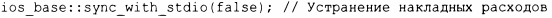

⇐10.8 Строковые потоки 10.10 Файловая система⇒
Стандартная библиотека С++ поддерживает также ввод-вывод стандартной библиотеки С, включая функции printf () и scanf ().Многие применения этой библиотеки являются небезопасными с точки зрения типов и защищенности от взлома, поэтому я не рекомендую ее использовать. В частности, с ее помощью может быть трудно организовать безопасный и удобный ввод. Она не поддерживает пользовательские типы. Если вы не используете ввод-вывод в стиле С и беспокоитесь о производительности ввода-вывода, вызовите
Без этого вызова потоки iostream могут быть более медленными из-за обеспечения совместимости со вводом-выводом в стиле С.